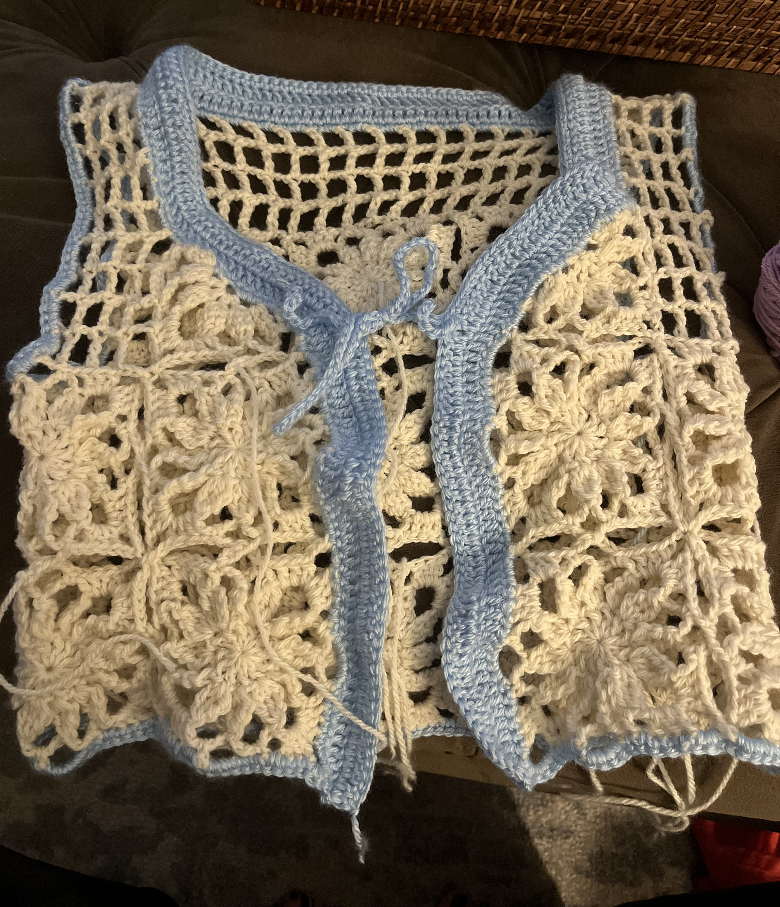
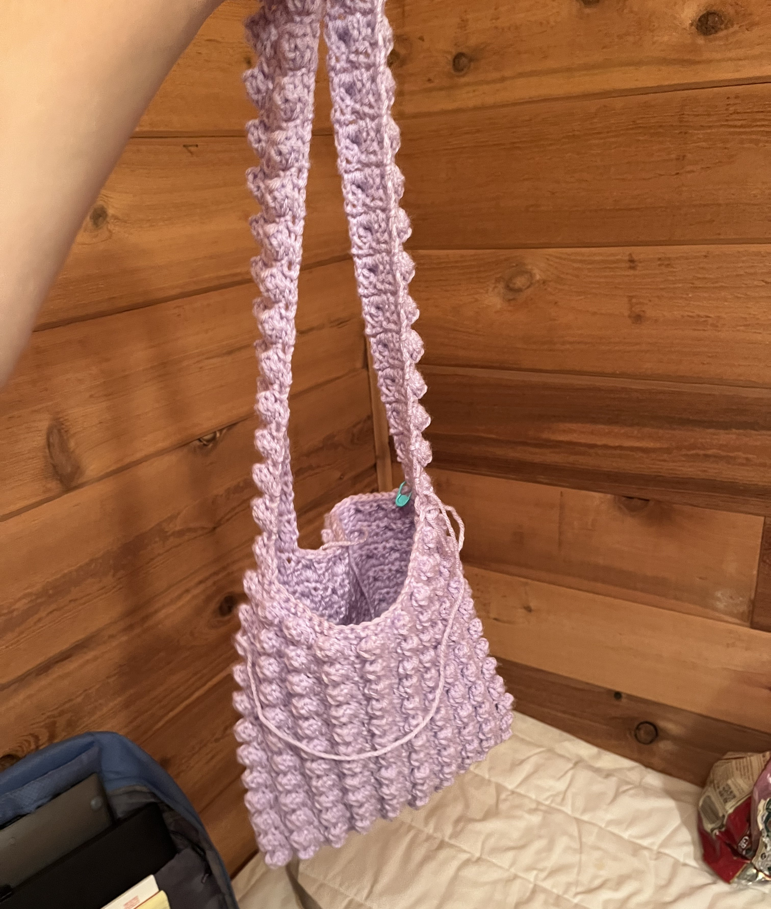

In high school, I taught myself how to crochet, which is a yarn weaving technique that uses a single hook, rather than a pair of knitting needles. Crochet is very fun and easy to learn and I highly recommend it to anyone interested in picking up a new hobby. I added some pictures of my crochet creations to this webpage.
Some things I've crocheted:
- Purses
- Hats
- Shirts
- Mittens
- Cardigan sweater

